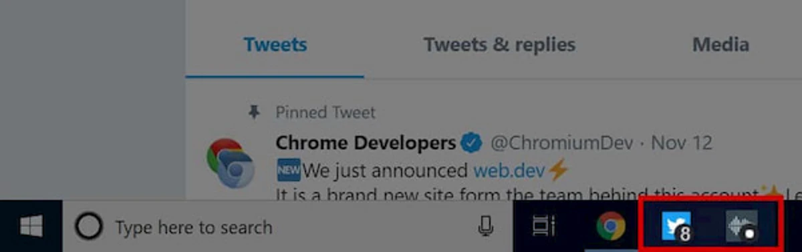

You have published your PWA: some users use it from the browser, others install it on their devices. When you update the app, it's important to apply best practices to avoid pitfalls.
You may update:
- App data.
- Assets already cached in devices.
- The service worker file, or its dependencies.
- Manifest metadata.
Let's check out the best practices for each of these elements.
Updating data
To update data, such as that stored in IndexedDB, you can use tools such as Fetch, WebRTC, or WebSockets API. If your app supports any offline features, remember to keep the data that supports the features updated too.
On compatible browsers, there are options to sync data, not only when the user opens the PWA but also in the background. These options are:
- Background synchronization: saves requests that failed and retries them using sync from the service worker.
- Web periodic background sync: syncs data periodically in the background, at specific times, allowing the app to provide updated data even if the user hasn't opened the app yet.
- Background Fetch: downloads large files, even when the PWA is closed.
- Web push: sends a message from the server that wakes up the service worker and notifies the user. This is commonly called a 'push notification'. This API requires the user's permission.
All these APIs are executed from the service worker context. They are currently available only on Chromium-based browsers, on Android, and desktop operating systems. When you use one of these APIs, you can run code in the service worker thread; for example, to download data from your server and update your IndexedDB data.
Updating assets
Updating assets includes any changes to files you use to render the app's interface, such as HTML, CSS, JavaScript, and images. For example, a change in your app's logic, an image that is part of your interface, or a CSS stylesheet.
Update patterns
Here are some common patterns to handle app updates, but you can always customize the process to your own needs:
- Full update: every change, even a minor one, triggers the replacement of the entire cache content. This pattern mimics how device-specific apps handle updates, and it will consume more bandwidth and will take more time.
- Changed assets update: only the assets that have changed since the last update get replaced in cache. It is often implemented using a library such as Workbox. It involves creating a list of cached files, a hash representation of the file, and timestamps. With this information, the service worker compares this list with the cached assets and decides which assets to update.
- Individual assets update: each asset is updated individually when it changes. The stale while revalidate strategy described in the Serving chapter is an example of updating assets individually.
When to update
Another good practice is to find a good time to check for updates and apply them. Here are some options:
- When the service worker wakes up. There is no event to listen for this moment, but the browser will execute any code in the service worker's global scope when it wakes up.
- In the main window context of your PWA, after the browser loaded the page, to avoid making the app load slower.
- When background events are triggered, such as when your PWA receives a push notification or a background sync fires. You can update your cache then and your users will have the asset's new version the next time they open the app.
Live updates
You can also choose whether to apply an update when the app is open (live) or closed. With the app closed approach, even though the app has downloaded new assets, it won't make any changes and will use the new versions on the next load.
A live update means as soon as the asset is updated in the cache, your PWA replaces the asset in the current load. It is a complex task not covered in this course. Some tools that help to implement this update are livereload-js and CSS asset update CSSStyleSheet.replace() API.
Updating the service worker
The browser triggers an update algorithm when your service worker or its dependencies change. The browser detects updates using a byte-by-byte comparison between the cached files and the resources coming from the network.
Then the browser tries to install the new version of the service worker, and the new service worker will be in the waiting state, as described in the Service workers chapter. The new installation will run the install event for the new service worker. If you are caching assets in that event handler, assets will also be re-cached.
Detecting service worker changes
To detect that a new service worker is ready and installed, we use the updatefound event from the service worker registration. This event is fired when the new service worker starts installing. We need to wait for its state to change to installed with the statechange event; see the following:
async function detectSWUpdate() {
const registration = await navigator.serviceWorker.ready;
registration.addEventListener("updatefound", event => {
const newSW = registration.installing;
newSW.addEventListener("statechange", event => {
if (newSW.state == "installed") {
// New service worker is installed, but waiting activation
}
});
})
}
Force override
The new service worker will be installed but waiting for activation by default. The wait prevents the new service worker from taking over old clients that might not be compatible with the new version.
Even though it is not recommended, the new service worker can skip that waiting period and start the activation immediately.
self.addEventListener("install", event => {
// forces a service worker to activate immediately
self.skipWaiting();
});
self.addEventListener("activate", event => {
// when this SW becomes activated, we claim all the opened clients
// they can be standalone PWA windows or browser tabs
event.waitUntil(clients.claim());
});
The controllerchange event fires when the service worker controlling the current page changes. For example, a new worker has skipped waiting and become the new active worker.
navigator.serviceWorker.addEventListener("controllerchange", event => {
// The service worker controller has changed
});
Updating metadata
You can also update your app's metadata, which is mainly set in the web app manifest. For example, update its icon, name, or start URL, or you can add a new feature such as app shortcuts. But what happens with all the users who have already installed the app with the old icon on their devices? How and when do they get the updated version?
The answer depends on the platform. Let's cover the options available.
Safari on iOS, iPadOS, and Android browsers
On these platforms, the only way to get the new manifest metadata is to re-install the app from the browser.
Google Chrome on Android with WebAPK
When the user has installed your PWA on Android using Google Chrome with WebAPK activated (most of the Chrome PWA installations), the update will be detected and applied based on an algorithm. Check out the details in this manifest updates article.
Some additional notes about the process:
If the user doesn't open your PWA, its WebAPK won't be updated. If the server doesn't respond with the manifest file (there is a 404 error), Chrome won't check for updates for a minimum of 30 days, even if the user opens the PWA.
Go to about:webapks in Chrome on Android to see the status of the "needing update" flag, and request an update. In the Tools and debug chapter, you can read more about this debugging tool.
Samsung Internet on Android with WebAPK
The process is similar to the Chrome version. In this case, if the PWA manifest requires an update, during the next 24 hours the WebAPK will be updated on Wi-Fi after minting the updated WebAPK.
Google Chrome and Microsoft Edge on desktop
On desktop devices, when the PWA is launched, the browser determines the last time it checked the local manifest for changes. If the manifest hasn't been reviewed since the browser last started or hasn't been checked in the last 24 hours, the browser will make a network request for the manifest and then compare it against the local copy.
When selected properties are updated, it will trigger an update after all windows have been closed.
Alerting the user
Some updating strategies need a reload or a new navigation from the clients. You'll want to let the user know there is an update waiting but give them the chance to update the page when it is best for them.
To inform the user, there are these options:
- Use the DOM or canvas API to render a notice on the screen.
- Use the Web Notifications API. This API is part of the push permission to generate a notification in the operating system. You will need to request web push permission to use it, even if you don't use the push messaging protocol from your server. This is the only option we have if the PWA is not opened.
- Use the Badging API to show that updates are available in the PWA's installed icon
 .
.
More about the Badging API
The Badging API lets you mark your PWA's icon with a badge number, or a badge dot on compatible browsers. A badge dot is a tiny mark within the installed icon that expresses something is waiting inside the app.

You need to call setAppBadge(count) on the navigator object to set a badge number. You can do this from the window or service worker's context when you know there is an update to alert the user.
let unreadCount = 125;
navigator.setAppBadge(unreadCount);
To clear the badge, you call clearAppBadge() on the same object:
navigator.clearAppBadge();
Resources
- Service Worker Lifecycle
- How Chrome handles updates to the web app manifest
- Synchronize and update a PWA in the Background
- Richer offline experiences with the Periodic Background Sync API
- Push API
- Push notifications overview
- Badging for app icons
- Workbox 4: Implementing refresh-to-update-version flow using the workbox-window module